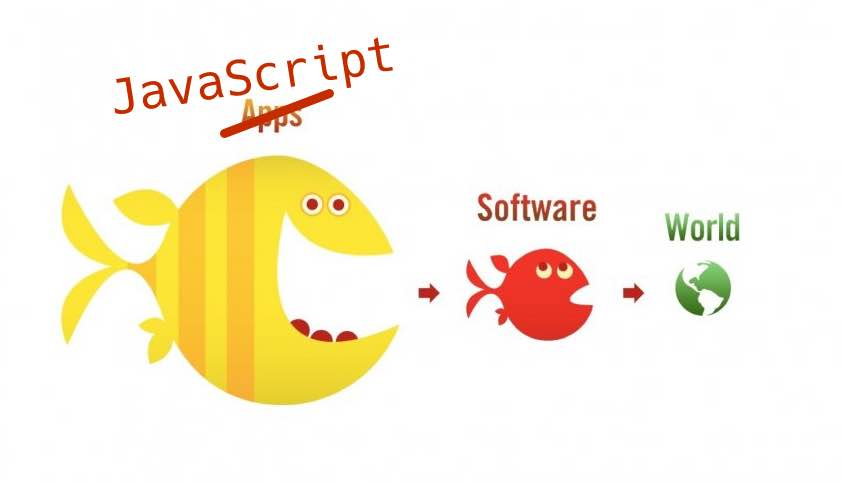

Le langage JavaScript
Sommaire
- Pourquoi JavaScript ?
- Syntaxe du langage
- Environnement de travail
Pourquoi JavaScript ?
JavaScript is eating the world

Un pré-requis essentiel
La majorité des solutions mobiles multi-plateformes est basée sur JavaScript.

Un langage modernisé
JavaScript est normalisé sous le nom ECMAScript.

La norme ES2015 (ou ES6) a apporté de très nombreuses améliorations au langage.
La syntaxe du langage
Déclaration de variables
JavaScript est un langage à typage dynamique.
let et const remplacent avantageusement var pour la déclaration des variables.
La valeur d’une variable déclarée avec const ne peut plus être modifiée.
let a = 3.14;
a = 6.28; // OK
const b = 3.14;
b = 6.28; // Erreur!
Chaînes de caractères
Créées avec des guillemets simples ('...') ou doubles ("...").
Litéraux de modèle: chaînes créées entre backticks (`) et permettant d’intégrer des expressions.
const country = "France"; // or 'France'
console.log(`I live in ${country}`); // "I live in France"
Déclaration de fonctions
function sayHello(name) {
const message = `Hello, ${name}!`;
return message;
}
console.log(sayHello("Richard")); // "Hello, Richard!"
Expressions fonction
Permettent de créer des fonctions anonymes.
La valeur d’une variable JavaScript peut être une fonction.
const hello = function(name) {
const message = `Hello, ${name}!`;
return message;
};
console.log(hello("Richard")); // "Hello, Richard!"
Fonctions fléchées
“Fat arrow functions”.
Syntaxe plus concise pour créer des fonctions anonymes.
const hello = name => {
const message = `Hello, ${name}!`;
return message;
};
// Syntaxe alternative encore plus concise
// const hello = name => `Hello, ${name}!`;
console.log(hello("Richard")); // "Bonjour, Richard!"
Tableaux
Plusieurs syntaxes existent pour les parcourir.
const movies = ["The Wolf of Wall Street", "Zootopia", "Babysitting"];
console.log(movies.length); // 3
for (let i = 0; i < movies.length; i++) {
// Use movies[i] to access each array element one by one
}
movies.forEach(movie => {
// Use movie to access each array element one by one
});
for (const movie of movies) {
// Use movie to access each array element one by one
}
Objets
Un objet JavaScript regroupe un ensemble de propriétés (paire clé/valeur).
// Création d'un objet litéral
const pen = {
type: "ballpoint",
color: "blue",
brand: "Bic"
};
// Modifcation de la valeur d'une propriété
pen.color = "red";
console.log(pen.type); // "ballpoint"
console.log(pen.color); // "red"
console.log(pen.brand); // "Bic"
Création d’objets à partir de variables
const firstName = "Baptiste";
const lastName = "Pesquet";
const twitterHandle = "@bpesquet";
const teacher = {firstName, lastName, twitterHandle};
console.log(teacher.firstName); // "Baptiste"
console.log(teacher.lastName); // "Pesquet"
console.log(teacher.twitterHandle); // "@bpesquet"
Déstructuration d’objets
const pen = {
type: "ballpoint",
color: "blue",
brand: "Bic"
};
// Accès à 2 des propriétés de l'objet
const { color, brand } = pen;
console.log(color); // "blue"
console.log(brand); // "Bic"
Déstructuration de tableaux
const primaryColors = ["red", "green", "blue"];
const [red, green, blue] = primaryColors;
console.log(red); // "red"
console.log(green); // "red"
console.log(blue); // "blue"
Opérateur de décomposition (”spread”)
Permet de développer une valeur itérable (chaîne, tableau…).
const chaine = "foo bar";
console.log(chaine); // "foo bar"
console.log([...chaine]); // ["f", "o", "o", " ", "b", "a", "r"]
const numbers = ["one", "two", "three", "four"];
const [one, two, ...rest] = numbers;
console.log(one); // "one"
console.log(two); // "two"
console.log(rest); // ["three", "four"]
Notion de méthode
La valeur d’une propriété peut être une donnée ou une fonction. Dans le second cas, la propriété est une méthode.
const aurora = {
name: "Aurora",
health: 150,
strength: 25,
// Renvoie la description du personnage
describe() {
return `${this.name} has ${this.health} health points
and ${this.strength} as strength`;
}
};
Classes
class Character {
constructor(name, health, strength) {
this.name = name;
this.health = health;
this.strength = strength;
}
describe() {
return `${this.name} has ${this.health} health points
and ${this.strength} as strength`;
}
}
const aurora = new Character("Aurora", 150, 25);
console.log(aurora.describe());
Appels asynchrones
Une promesse (promise) est un objet qui encapsule une opération dont le résultat n’est pas encore connu.
// Envoie une requête HTTP asynchrone vers l'URL spécifiée
fetch(url)
.then(() => {
// Code appelé ultérieurement si la requête réussit
})
.catch(() => {
// Code appelé ultérieurement si la requête échoue
});
Consommation d’API web
// Envoi d'une requête HTTP asynchrone vers l'URL spécifiée
// La réponse est reçue sous forme de données JSON
fetch("http://my-api-url")
.then(response => response.json()) // JSON vers JavaScript
.then(content => {
// Utilisation du contenu de la réponse
// ...
})
.catch(err => {
console.error(err.message);
});
Modules et imports
JavaScript supporte la notion de module pour factoriser des éléments réutilisables.
// Importe l'élément exporté par défaut par le module
import React from "react-native";
// Importe d'autres éléments exportés grâce à leur nom
import { View, Text, Image } from "react-native";
// Importe à la fois l'élément par défaut et d'autres éléments
import React, { View, Text, Image } from "react-native";
Plus de détails sur JavaScript
https://developer.mozilla.org/fr/docs/Web/JavaScript
Environnement de travail
Plate-forme JavaScript basée sur le moteur d’exécution V8 de Chrome.
Permet de créer des applications JS hors du navigateur (serveur, mobile, etc).
Supporte un riche écosystème de librairies en tout genre installables sous forme de packages.
Gestion des dépendances
Le standard historique est npm.
npm init # Create a minimal package.json file
npm install <package name> # Install <package name> locally
npm install -g <package name> # Install <package name> globally
npm install # Install all packages listed in package.json
npm update # Update local packages to latest version
npm update -g # Update global packages to latest version
npm list # List locally installed packages
npm list -g # List globally installed packages
# Search the package index for <package name>
npm search <package name>
Autre possibilité : yarn (plus récent).
Le fichier package.json
Associé à un fichier verrou package-lock.json.
{
"main": "node_modules/expo/AppEntry.js",
"scripts": {
"start": "expo start",
"android": "expo start --android",
"ios": "expo start --ios",
"eject": "expo eject"
},
"dependencies": {
"react-native": "https://github.com/expo/react-native/archive/sdk-35.0.0.tar.gz",
"expo": "~35.0.0",
"react": "16.8.3"
},
"devDependencies": {
"babel-preset-expo": "~8.0.0"
},
"private": true
}
Versionnage des dépendances
Versionnage sémantique X.Y.Z
- X = version majeure (changements potentiellement non rétrocompatibles).
- Y = version mineure.
- Z = patch.
^1.1.1 équivaut à $\geq$ 1.1.1 et $<$ 2.0.0
~1.1.1 équivaut à $\geq$ 1.1.1 et $<$ 1.2.0
1.1.1 cible une version exacte.
Formatage automatique du code
Prettier est un outil indispensable.
Analyse du code
ESLint est l’outil le plus utilisé. Sa configuration se fait via un fichier .eslintrc.json.
{
"extends": ["airbnb", "prettier"],
"env": {
"browser": true
},
"plugins": ["prettier"],
"rules": {
"no-console": "off",
"no-alert": "off",
"no-plusplus": "off",
"default-case": "off",
"no-param-reassign": [
"error",
{
"props": false
}
],
"arrow-body-style": [
"error",
"as-needed",
{ "requireReturnForObjectLiteral": true }
]
}
}
Transpilation du code
- Babel transforme le code JavaScript ES2015+ en code ES5 compatible avec tous les environnements d’exécution JS.
- Il permet d’utiliser sereinement les dernières évolutions du langage.